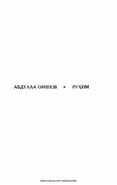

RAbdulla Oripovning Vatam va insoniy tuyg'ularni tarannum etuvchi sara she'rlari to'plami.
Ushbu kitob taniqli o'zbek shoiri Abdulla Oripovning "Ruhim" nomli she'riy to'plami bo'lib, unda muallifning turli yillarda yozilgan sara asarlari jamlangan. To'plamda Vatanga muhabbat, insoniylik, hayot mazmuni va axloqiy qadriyatlar chuqur falsafiy tilda tarannum etilgan. Kitob o'quvchini hayot haqida mushohada yuritishga undaydi.